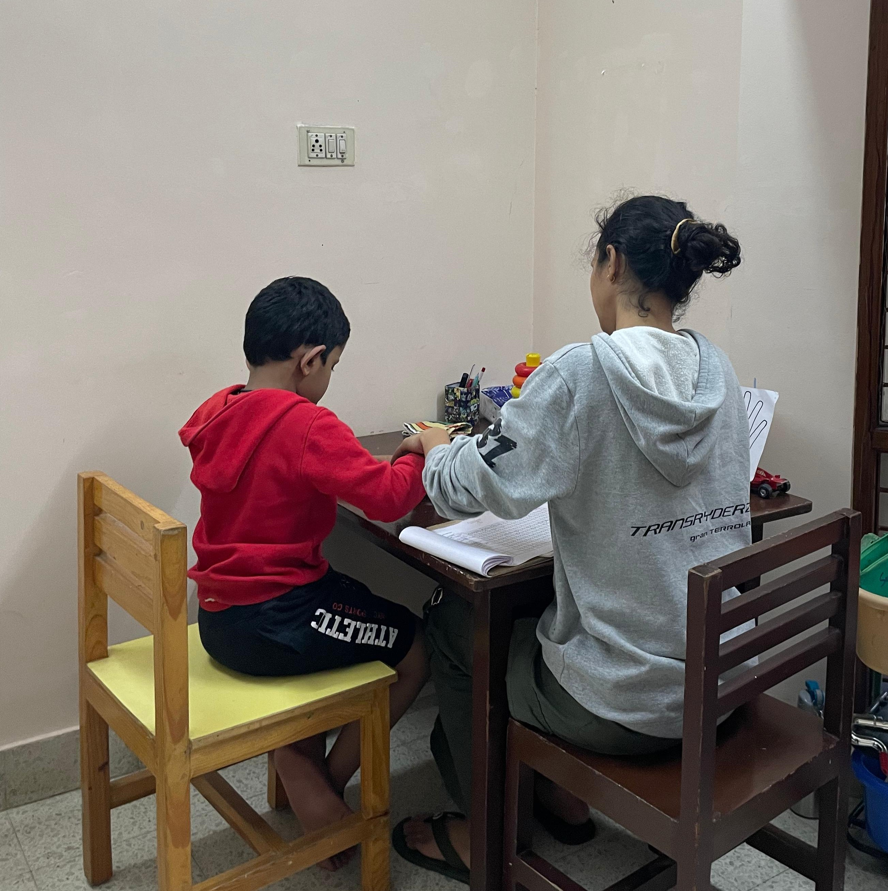
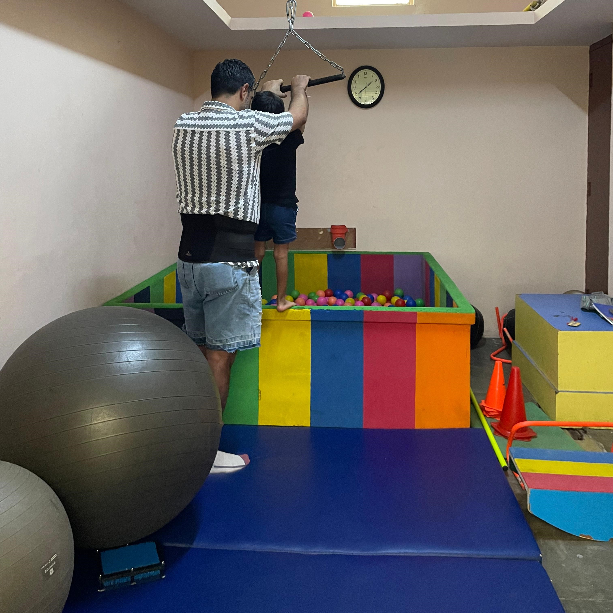
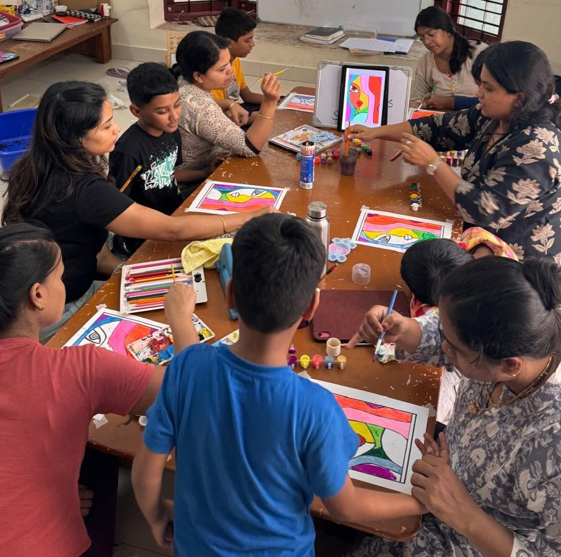
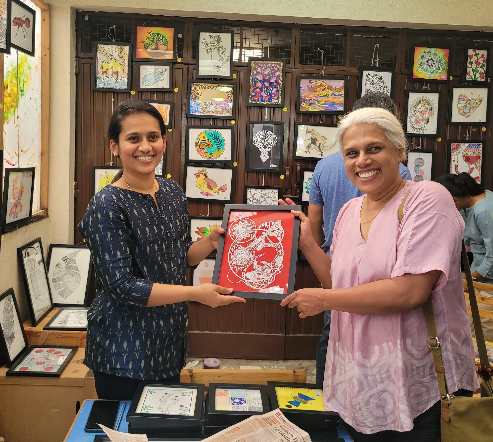

Services
Our services at sambhavam are currently focused on early intervention for children up to 8 years and academic support for primary school. We conduct parent training programs as well as periodic awareness and training workshops. In addition, we offer internships to undergraduate and graduate students seeking to learn more about autism and ABA.
Early Intervention
Assessments and IEP
When we start working with a child, we perform a comprehensive set of assessments to identify their strengths and developmental needs. These assessments include behavior assessments, cognitive assessments, communication assessments and motor assessments. Based on the current abilities of the child, we identify the next set of goals and the methods to work with them. This leads to the development of a detailed Individual Education Program (IEP). IEP then becomes basis of all our conversations about the child’s learning journey. Progress is tracked along the goals and IEP is updated periodically with new goals.
One to one ABA Therapy
We offer two hours of Applied Behavior Analysis based therapy to every child, every day from Monday to Friday. During ABA therapy sessions, we focus on various goals in language development, cognitive development, self help skills and motor skills. With young children, we specifically work on toilet training and eating habits. Each therapy sessions is one to one - there is a therapist dedicated to the child during this time.

Our time slots are 9.15 am to 11.15 am, 11.45 to 1.45 pm and 2.30pm to 4.30pm. Each family can choose a slot comfortable for them.
Speech Language Therapy
A two way channel of communication is a very important need, especially for children on the spectrum. Since communication challenges are among the key features of autism, many children benefit from speech and language therapy. However, speech therapy is not just about speech or language but about holistic communication.
At sambhavam, we offer speech therapy in 45 minutes sessions per day, at a frequency recommended by our therapists, based on the needs of the child. We also train non-verbal or minimally verbal children and their parents on the use of Assisted and Augmented Communication systems like PECS, AWAZ etc.
Occupational Therapy
Occupational Therapy is among the top therapies recommended for autism. The general focus of OT is to improve the child’s ability to participate in activities of daily living, which may include things like dressing or brushing teeth.

During OT sessions, the focus is on improving fluency in gross motor actions like climbing stairs, fine motor actions like using a pencil or a paint brush, daily living skills like tying shoelaces and social functioning goals like catching a ball.
At sambhavam we offer 45 minute OT sessions, at a frequency recommended by our therapists.
Academic Support
Shadow Teachers
Most schools these days require a shadow teacher to be with the child in the classroom to support the child during the day. We offer the services of well trained shadow teachers. In addition to providing support in school, children we work with come to our center periodically, along with their shadow teachers, so that we can continue to train them together and address any emerging challenges and requirements. We worj collaboratively with parents and the school to ensure the child gets the best learning experience.
Remedial Programs
Remedial programs are offered to school going children, who may require specific support in academic, social and leisure skills. We offer remedial programs in the evenings, to suit the time tables of the children. Very often, we partner with the parents and the school so that the child can derive the maximum benefit.
Homeschooling Support
An increasing number of parents realise that the standardised, main stream schooling does not cater to the specific requirements of their child. Most of the parents who are willing to spend the time and energy needed to work with their own children, still feel unsupported and alone in their journeys. They feel they can benefit from the social support of like-minded families, as well as academic support from experienced educators and therapists. We provide such support through our Subodha project.

Trainings & Workshops
Parent Training
For most parents, a diagnosis of autism comes as a shock. These days, autism is relatively well known but that is not to say it is well understood. Often, parents are bombarded with information from various experts, and expectations from various quarters. All of this points to genuine need - parents need help in making sense of autism, and how to deal with it in their own lives. At the minimum, they should be able to understand the inputs they get from various therapists and make sense of them. At best, they should be grow to be able to manage their child’s support needs entirely by themselves.
These are the goals of our parent training programs. We offer an ongoing training program to any parent interested in working with and learning alongside their child. You can talk to us any time to join this program.
In addition, we offer periodic workshops and webinars. Please watch our blog or get in touch with us to know about the latest.
Awareness Programs and Workshops
Another issue faced by people who are living with autism is the public ignorance about autism and how it manifests in children. We all wish people around us understood autism better!
We take the wish forward and conduct awareness workshops and events, primarily aimed at reaching more and more people with information about autism. The most prominent of these is our annual Autism Awareness Event, which usually happens in the first week of April every year.

Additionally, we conduct awareness workshops and webinars on demand. Please get in touch with us if you want to organise an awareness workshop/event/webinar in your community - your apartment complex, workplace, or any other social group you are part of.
Internships
In India, there are very few places that offer autism specific professional training. Mosst professionals who study psychology, social work or allied subjects are barely aware of autism and are completely out of touch with the reality of living with autism. This adds to the challenge of finding entusiastic, well trained therapists.
Our internship programs are aimed at providing a structured, experiential learning experience to students and fresh graduates. We hope to show them the joys of working in this space, and the impact they can make. We offer internships without any charges to the interns and hope that the exposure they get disposes them positively towards continuing to work in the autism/neurodiverse space.